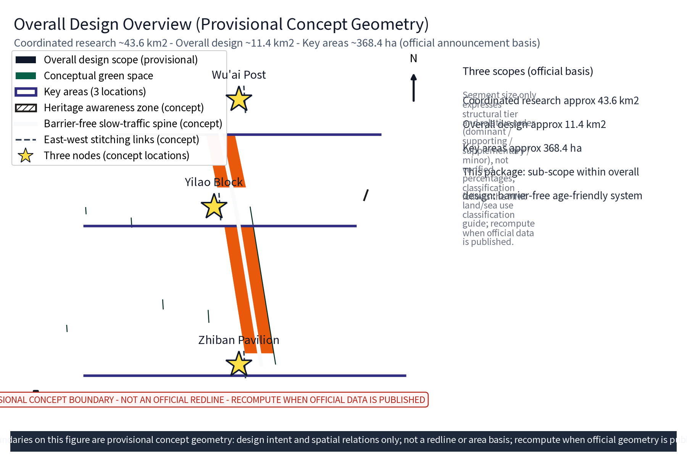
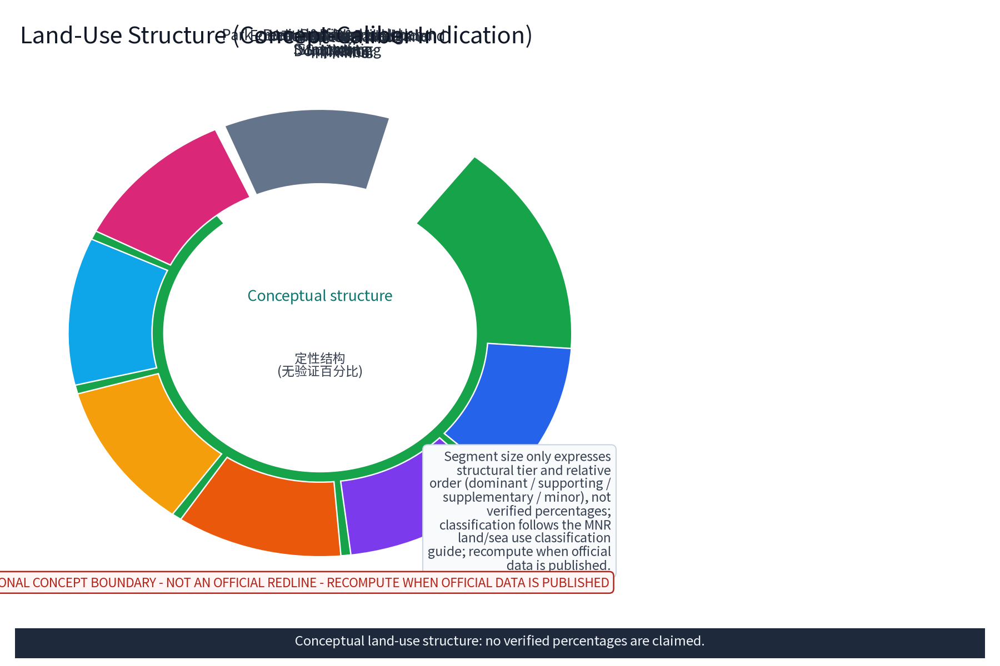
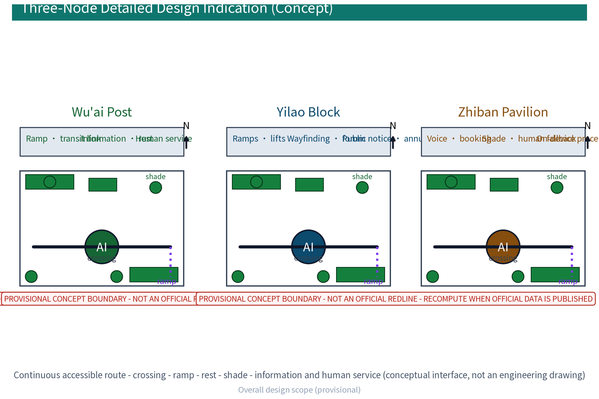
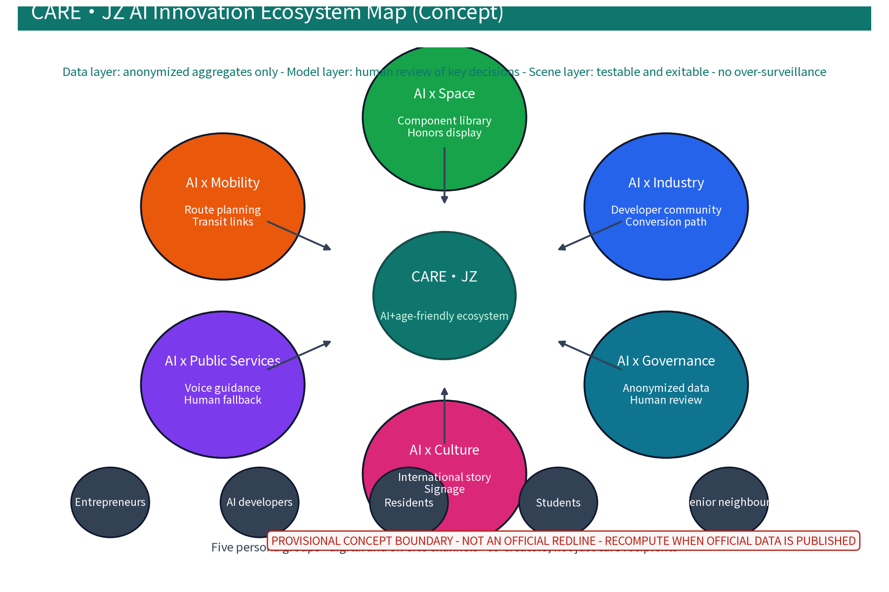
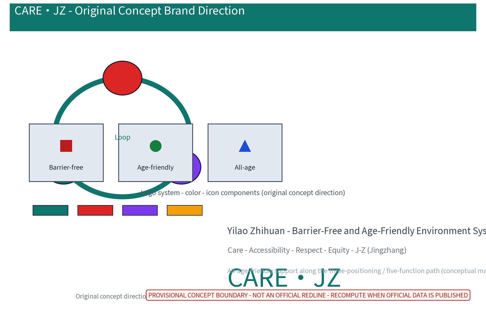
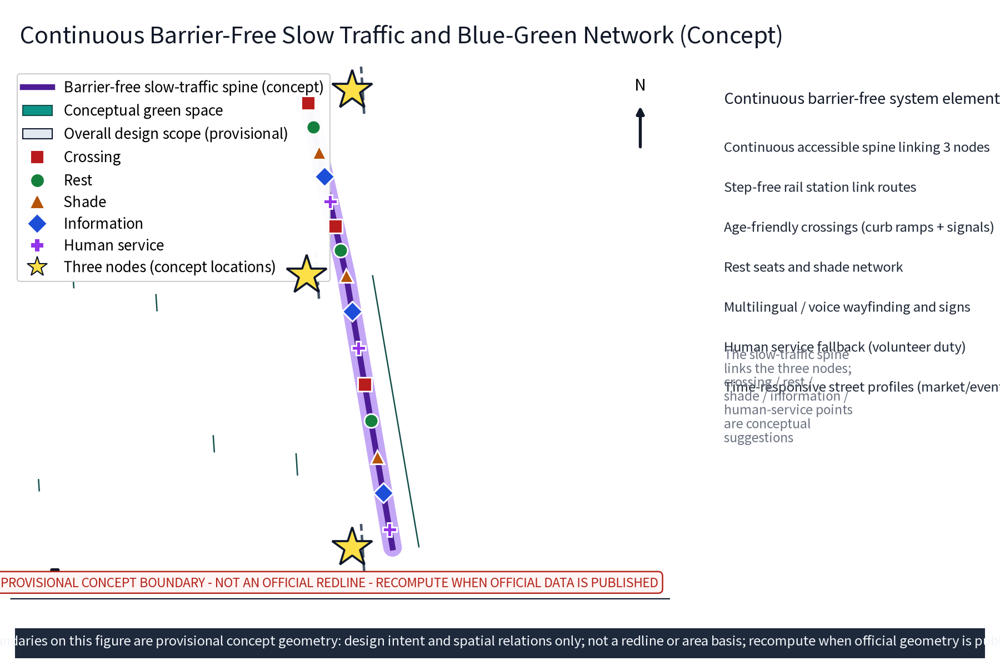
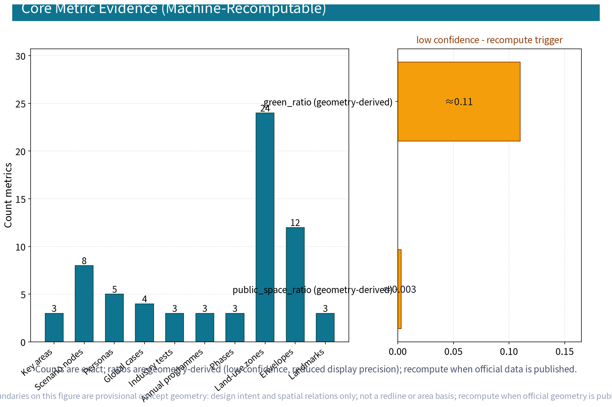

CARE·JZ: Barrier-Free and Age-Friendly Environment System (Concept)
The CARE·JZ (Yilao Zhihuan - Barrier-Free and Age-Friendly Environment System) concept builds an accessible, age-friendly environment along the Jingzhang AI Innovation Belt: the Wu'ai Post barrier-free slow-traffic and transit service node, the Yilao Block age-friendly community renewal demonstration unit, and the Zhiban Pavilion AI-assisted age-friendly public information pavilion, linked by a continuous accessible slow-traffic spine. Five persona groups, ten scenario cards and three industry test scenarios respond item by item to tasks agent.1-agent.6, processing anonymized aggregates only, with human review of key decisions and no over-surveillance. Everything is a concept suggestion: no FAR, height, demolition/retention or investment conclusions, based on provisional boundaries; recompute when official data is published.
Design Basis and Source List
This proposal builds on the Barrier-Free Environment Law of the PRC (in force since 2023), the Law on Protection of the Rights and Interests of the Elderly, and MCA/MOHURD policy on age-friendly renovation and elderly-friendly society building; the official announcement and the task book define the scope, the three positionings, the five functions and the six tasks. The city design measures and regulatory detailed planning measures provide methodological references. The list below is a public-reference checklist only; all data actually used is registered in sources.json, gaps are disclosed honestly in the risk section, and no official data is fabricated. During formal design, texts must be re-checked against official releases. CARE·JZ is an original concept direction and internal working codename; no registration or external use before prior-rights clearance.
Evidence: Source, Source.
Three-Level Scope Framework
Per the official announcement, the three top-down scopes are: coordinated research area approx 43.6 km2, overall design area approx 11.4 km2, and key detailed-design areas totalling approx 368.4 ha. This package sits inside the overall design scope and frames the barrier-free, age-friendly environment system as the public-support subset of the "smart AI vitality city" positioning (conceptual mapping). All boundaries are marked provisional: the coordinated layer reviews universities, tech districts, neighbourhoods and industrial synergy; the overall layer runs a regulatory-plan-depth concept design along the Jingzhang Railway Heritage Park green belt; the key-area layer deepens the three nodes "Wu'ai Post - Yilao Block - Zhiban Pavilion". The three layers transfer inputs downward and check indicators; no conclusion beyond concept depth is made; full recompute when official geometry is published.
Evidence: Source, Source.
Coordinated Research Area: Industry and Future City Research
The coordinated study reads the barrier-free, age-friendly environment inside the "industry - talent - life" chain: Haidian universities and tech districts gather young AI developers and entrepreneurs, international housing areas coexist with ageing neighbourhoods, forming an all-age mix. The task book's three positionings (centennial Jingzhang culture belt, metropolitan AI-life experience belt, AI-integrated innovation belt) and five functions (full-stack AI self-innovation system, world-class AI innovation ecosystem, new AI+ scenario paradigm, smart AI vitality city, global AI governance voice) set the stage; this package maps the all-age-friendly and accessibility dimension under the smart AI vitality city positioning. Cross-regional cooperation follows the "three zones, two wings" framework as a concept cooperation circle (research hypothesis) with Beixiang community, Future Science City, Huairou Science City, the Economic-Technological Development Area and the Beijing-Tianjin-Hebei region on age-friendly mechanism exchange, data-compliance standards and O&M alliance learning; no administrative or investment arrangement is presupposed. Future-city research stays directional: senior neighbours are co-creators of community data and scenarios, not merely care recipients.
Evidence: Source.
Overall Design Area: Urban Renewal and Regulatory-Plan-Level Urban Design
The overall design uses the heritage park green belt as the backbone for a continuous barrier-free slow-traffic network that links public spaces at all levels, forming a "green belt + nodes" structure; renewal is retention-first, facilities are implanted and retrofitted, and no land increase/decrease, building scale or demolition/retention figures are preset. Spatial design checks station-community-street relationships under the "three zones, two wings" structure: step-free rail station link routes, community entrances and slow-traffic gaps are concept-checked for reachability. A reversible public-space component library (ramp modules, seating-and-shade modules, signage and information modules, accessible toilet modules) supports replication and stacking under property and structural conditions; at regulatory-plan level only verification suggestions are made - land-use categories, greening ratio and public-service provision are cross-checked with recompute triggers, with no mandatory FAR or height adjustments.


Evidence: Standard, Source.
Detailed Design of Key Areas
All three node locations are concept locations and must be re-sited after planning, heritage, fire and authority review before implementation: the Wu'ai Post is a barrier-free slow-traffic and transit service node with ramps, information desks and rest-and-transfer along the green-belt spine; the Yilao Block is an age-friendly community renewal demonstration unit covering ramp conversion, lift-feasibility review, wayfinding upgrades and entrance widening directions; the Zhiban Pavilion is an AI-assisted age-friendly public information station at the intersection of the green belt and communities, providing voice interaction, booking-based attendance and human fallback. The service interface is drawn as a concept plan/section on six elements: continuous accessible route, crossing, ramp, rest, shade, and information plus human service. Senior neighbours calibrate the nodes through building-level deliberation and needs interviews. The three nodes are linked by the accessible slow-traffic spine and concept-related to rail stations, street gaps and community entrances; ownership, structure, fire egress and municipal capacity remain for special evaluation.

Evidence: Spatial data (polygons from geometry/key_areas.geojson).
AI Innovation Ecosystem, Personas, and AI+ Scenarios
Five persona groups: entrepreneurs, AI developers, residents, students and senior neighbours, each annotated with spatial activity traits and accessibility needs; senior neighbours join scenario design and annual review as co-creators rather than care recipients. The AI ecosystem is organized as data-model-scene layers and drawn as an ecosystem map: the data layer is anonymized aggregates only, the model layer has human review of key decisions, the scene layer is testable and exitable; coverage spans six AI domains - industry, space, mobility, public services, culture and governance. A developer community (open scenario sandbox, open-source components, annual co-creation contest and leaderboard) and a conversion path (scenario test - pilot filing - alliance cooperation) support open scenes under public admission notice. Every scenario carries model evaluation, data-quality checks and runtime monitoring with false-positive baselines as acceptance floors; all scenarios keep anonymized aggregation, minimal necessary collection, human review and no over-surveillance. Brand and communication copy targets international dissemination (bilingual signage and narrative, internal codename usage boundaries in the risk section).


Scenario card index (concept): the ten cards below state users, data, space, model, operator, human fallback, privacy control, stage gates, indicators and stop conditions; all are concept suggestions, not approved services:
| Scenario card | Location (spatial carrier) | Users | Input data and model | Operator and human fallback | Privacy control | Stage gate / indicator / stop condition |
|---|---|---|---|---|---|---|
| "Wu'ai Route" accessible transfer guide | Wu'ai Post | Seniors, persons with disabilities | anonymized route aggregates; route-planning model | station operator; volunteer duty, human escort | explicit consent, one-tap opt-out | pilot gate: on-site false-positive floor; stop: repeated false positives |
| "Yilao Block" age-friendly retrofit demo | Yilao Block | Seniors, residents | anonymized retrofit needs; facility-ledger recognition model | community operator; block deliberation, human review | anonymized aggregates, human review | gate: block participation floor; stop: insufficient coverage |
| "Zhiban Desk" AI voice guidance | Zhiban Pavilion | Seniors, vulnerable groups | on-device voice; Q&A model | station operator; booked duty, human fallback | on-device processing, no over-surveillance | monthly gate: satisfaction floor; stop: low satisfaction |
| "Check-up Sheet" annual accessibility check | Belt nodes | Community delegates, workers | aggregate inspection records; ledger recognition model | street coordination; community delegate review | aggregate statistics, human review | annual gate: rectification closure floor; stop: ledger distortion |
| "Companion" accessibility inquiry | Green-belt service points | Visitors, families | anonymized inquiry statistics; retrieval model | volunteer team; rotation duty, human answers | aggregate statistics only, no individual tracking | quarterly gate: response-time floor; stop: demand shift |
| "Safe Crossing" crossing aid | Age-friendly crossings | Seniors, children | on-device environment judgement; signal interaction model | transport coordination; timed operation, human fallback | on-device processing, no footage retention | gate: false-positive baseline; stop: exceeded baseline |
| "Warm Bench" rest and shade service | Rest points | All ages | anonymized usage statistics; facility scheduling model | community operator; adoption compact, rotation | anonymized usage statistics | half-year gate: usage floor; stop: idle facilities |
| "Pocket Classroom" digital skills | Community centres | Seniors | registration aggregates; course matching model | volunteer teacher team; on-site assistant fallback | minimal registration collection | term gate: completion floor; stop: low enrolment |
| "Intergenerational Stage" culture room | Culture nodes | Families, intergenerational groups | event registration aggregates; scheduling model | culture operator; community deliberation, honors display | registration aggregates only | event gate: participation floor; stop: safety assessment fails |
| "Guard List" home retrofit advisory | Community service stations | Home-bound seniors | encrypted consultation records; checklist matching model | professional social workers; human callback, tiered service | encrypted records, time-limited deletion | annual gate: callback floor; stop: privacy complaint |
Industry test and validation scenarios (concept): three test scenarios are protocol-managed with entry, exit, validation methods and stop conditions; none is an approved service:
| Test scenario | Protocol elements | Entry and exit | Validation method and stop condition |
|---|---|---|---|
| "Wu'ai Route" route-planning model test | users/data/space/model/operator/human fallback | Pilot section entry; exit on repeated false positives | On-site walk-through comparison, false-positive and data-quality baselines |
| "Check-up Sheet" facility ledger recognition test | users/data/space/model/operator/human fallback | Block unit entry; exit on insufficient coverage | Sample re-check and error stratification; scale after threshold |
| "Zhiban Desk" voice response service test | users/data/space/model/operator/human fallback | Station quota entry; exit on low satisfaction | Monthly review and runtime monitoring, human review backstop |
Evidence: Source, Metric, Metric.
Land Use, Building Scale, and Retain-Renovate-Demolish Strategy
The strategy combines retain, renovate and demolish with retention first: the heritage park fabric and railway relics are kept, existing buildings undergo functional conversion and accessibility retrofits (ramps, lift-feasibility review, wayfinding upgrades, entrance and passage widening), and demolition is limited to case-by-case small buildings that unblock slow-traffic links; all figures are concept calibers to be recomputed when official data is published. No land increase/decrease, building-scale values or demolition/retention conclusions are preset; renovation follows the "light intervention, stackable" principle and rolls out under property and structural conditions, with scale and disposition left to special evaluation. Land-use structure is expressed as qualitative tiers (dominant/supporting/supplementary/minor) without unverified percentages; caliber and aggregation rules are unified in the metrics section.
Evidence: Source.
Transport, Rail, Municipal Infrastructure, and Public Services
Slow traffic comes first: a continuous accessible slow-traffic axis along the green belt links the three nodes, and street profiles respond by time of day (market, event, daily modes); step-free rail station link routes, entrance ramps and age-friendly crossings (curb ramps, accessible signals) are overall concepts; green mobility is prioritized, car dependence reduced, and event dispersal is phased by zone and time. Municipal infrastructure follows intensive sharing with co-location suggestions beside public space; public services configure accessible multilingual services, age-friendly wayfinding, accessible toilets and human-service fallback, and every AI decision carries human review. This section states only the facility system and connection logic; no pipeline capacity, section dimensions or engineering conclusions are preset pending special studies.
Evidence: Standard.
Blue-Green Network, Public Space, and Urban Character
A "green belt as axis, node parks as pearls" blue-green network links pocket parks and community green spaces along the heritage belt into a continuous ecological and public-space system; an age-friendly park concept is proposed - gentle paths, anti-slip paving, rest seats and a shade network, with spacing and shade coverage checked against age-friendly needs. The cultural wayfinding system continues the industrial-memory vocabulary of the Jingzhang Railway while serving age-friendly information (large type, multilingual, voice); community honors display and intergenerational co-creation spaces are embedded in the nodes. The overall character stays restrained and unified: new and retrofitted facilities use low-key, durable, recognizable vocabulary, making accessibility facilities and signage a recognizable city symbol rather than a temporary attachment, avoiding symbol stacking and slogan packaging.

Evidence: Standard.
Renewal Projects, Implementation Policy, and Phasing
Four renewal project categories (accessibility check-up and digital ledger; slow-traffic gap treatment and crossing completion; three-node demonstration; age-friendly public services and community operation network) are concept lists; scale and investment estimates are qualitative tiers (low/medium/high) only and imply no government or operator commitment. Phasing: near 1-3 years run the accessibility check-up, build the ledger and remove priority slow-traffic gaps; mid 3-5 years implement the three-node demonstration and wayfinding upgrades; long 5-10 years form the belt-wide age-friendly environment network. The implementation matrix names lead (government coordination) and collaborator (authorities, enterprises, universities, communities, volunteers, professionals) roles, pilot admission conditions, stage gates and acceptance criteria, and presets stop and exit conditions: any pilot failing its stage gate suspends expansion, fixes under deadline or is withdrawn; a community compact and annual public notice safeguard public awareness. The annual programme system implements the annual notice and annual events requirement:
| Annual programme brand | Frequency | Participation mechanism | Main purpose |
|---|---|---|---|
| Accessibility Experience Day | once a year | volunteer guidance, booked experience | belt-wide accessibility check and public feedback |
| Age-Friendly Living Bazaar | once a year | merchant rotation, points | age-friendly products and services matching |
| Intergenerational Cohesion Season | once a year | community deliberation, compact building | all-age co-creation and results display |
Evidence: Metric, Metric.
Metrics, Area Recalculation, and Compliance Matrix
Metrics are managed as "recomputable count metrics plus directional metrics". Count metrics (key areas, scenario nodes, personas, global cases, industry tests, annual programmes, phases, land-use zones, concept envelopes, landmarks) derive from geometry and text and are auditable in metrics.json. Ratio metrics disclose caliber and formulas: green_ratio approx 0.11 is the conceptual green-polygon area divided by the overall-design area (provisional geometry recomputation); public_space_ratio approx 0.003 is the conceptual public-space area divided by the overall-design area; both are the "geometry-recomputed caliber", different in denominator, classification and formula from the "classification-illustration caliber" structural shares of the land-use diagram, marked low confidence and uniformly recomputed after official data publication, displayed at reduced precision. Directional metrics (accessible slow-traffic penetration, age-friendly facility coverage, all-age public-space share, accessible signage coverage, elderly-friendly activity participation) carry no values and only define statistical caliber and recompute triggers. The compliance matrix marks conformity levels item by item against the Barrier-Free Environment Law; area recalculation uses the official text caliber as the floor, and any extrapolated data beyond that caliber is not used.

Evidence: Metric, Metric, Source.
Risk, Copyright, and Compliance
This proposal is a concept research design: it is not an administrative approval basis, nor FAR, height, demolition/retention or engineering feasibility conclusions. The organizer has not yet published coordinate-verifiable polygons for the three scopes or key areas; all geometry is provisional, for concept display and machine validation only, to be recomputed when official data is published. Risks are registered honestly in risk.json across data boundaries, missing statutory controls, accessibility retrofit sequencing, property coordination, facility maintenance, technology dependence and public acceptance. The field-level governance direction for every data scenario is tabled below (data controller, collected fields, retention period, deletion mechanism, access rights, audit and incident response are all concept arrangements to be finalized by statutory procedures before operation):
| Data scenario | Data controller (concept) | Collected fields | Retention and deletion | Access rights | Audit and incident response |
|---|---|---|---|---|---|
| "Wu'ai Route" transfer guide | station operator (concept) | anonymized route aggregates, consented sessions | session deleted; daily aggregates retained no longer than a quarter | least privilege, dedicated accounts | quarterly audit; incident means suspension and public notice |
| "Zhiban Desk" voice guidance | station operator (concept) | on-device voice interaction records | on-device processing, no cloud retention | duty staff only | monthly audit; privacy complaint triggers review |
| "Check-up Sheet" annual check | street coordination (concept) | aggregate inspection ledger | annual archive then anonymization | authorized bodies | annual audit and published results |
| "Guard List" advisory | community service station (concept) | encrypted consultation records | time-limited deletion after service closure | social workers and professional bodies | annual audit; deletions logged |
AI governance three sentences: anonymized aggregates only; human review of key decisions; no over-surveillance. Resident feedback channels (opinion solicitation, trial feedback, block deliberation), annual public notice and annual events are operating-mechanism directions. Rights record: fonts are redistributable open-source fonts with license records; figures, icons, logos and copy are original participant works registered asset-by-asset in the copyright statement; knowledge cases carry institutional sources and access dates. Brand prior rights: no trademark search at concept stage; "Yilao Zhihuan" and "CARE·JZ" are internal working codenames, restricted from external use or registration until clearance. Public sources are cited with provenance; this proposal does not claim access to non-disclosed materials; multi-agency joint review, heritage protection and safety assessment are required before formal implementation.
Evidence: Source, Source.
References
All entries are public citations; details follow the official quoting version: (1) Barrier-Free Environment Law of the PRC (in force 2023); (2) Law on Protection of the Rights and Interests of the Elderly and related age-friendly renovation and elderly-friendly society guidance; (3) Urban Design Measures and Regulatory Detailed Planning Measures as methodological references; (4) the official announcement, task book and design-condition texts; (5) public materials on Zhongguancun innovation culture and Jingzhang railway history (narrative-caliber reference). Six benchmark cases (each with institutional source, publication and access dates in sources.json), used only as mechanism benchmarks, implying no commitment to local implementation:
| Case | Institution source | Mechanism point (conceptual benchmark) | Source |
|---|---|---|---|
| Kampung Admiralty, Singapore | HDB | vertically integrated healthcare-care-housing, universal design | hdb.gov.sg integrated developments page |
| Toyoshikidai, Kashiwa City, Japan | Kashiwa City | ageing-in-place longevity society, public-academia-private agreement | city.kashiwa.lg.jp |
| London step-free access programme | Transport for London | whole-journey step-free rail, shorter accessible journey times | tfl.gov.uk |
| Copenhagen age-friendly street action | City of Copenhagen | age-friendly benches and public-space retrofit | kk.dk |
| Beijing barrier-free action plan | General Office of Beijing Municipal Government | four-field special action, ledger-based rectification | beijing.gov.cn |
| Shenzhen barrier-free city regulation | Shenzhen Municipal Government | first barrier-free city legislation in China | sz.gov.cn information platform |
Domestic references also include Shanghai age-friendly renovation and Hangzhou all-age-friendly community public reports. All cases are mechanism benchmarks only; sources.json contains verifiable entries only.
Evidence: Source.